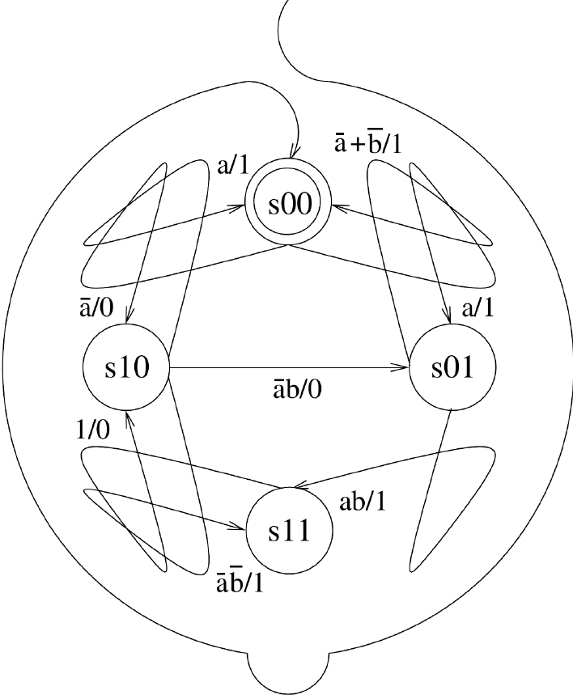
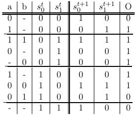
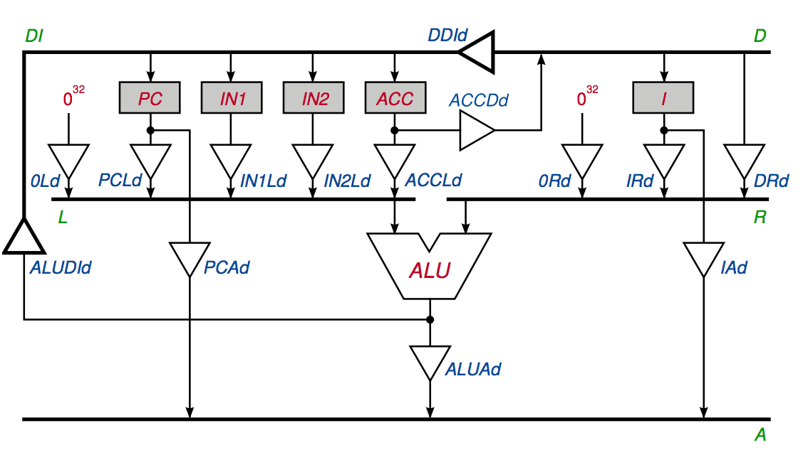
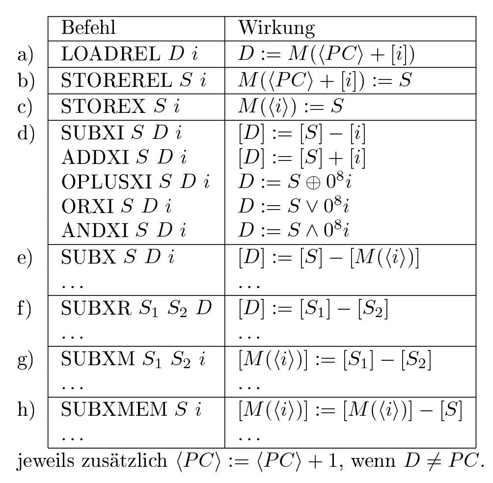
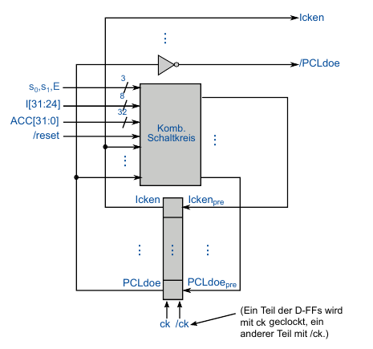
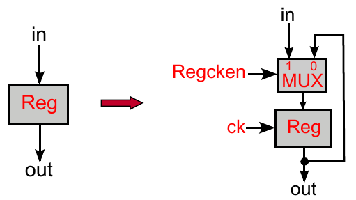
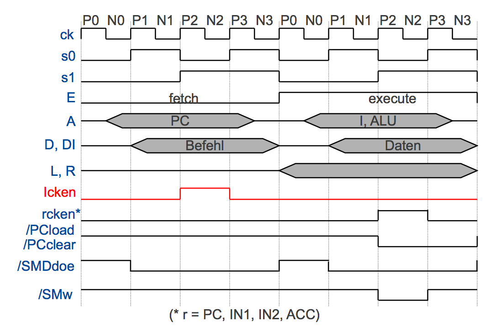

<!doctype html>
<html lang="en">
    <head>
        <meta charset="utf-8">
        <title>reveal-md</title>
        <link rel="stylesheet" href="css/reveal.css">
        <link rel="stylesheet" href="css/theme/black.css" id="theme">
        <!-- For syntax highlighting -->
        <link rel="stylesheet" href="lib/css/zenburn.css">

        <!-- If the query includes 'print-pdf', use the PDF print sheet -->
        <script>
          document.write( '<link rel="stylesheet" href="css/print/' + ( window.location.search.match( /print-pdf/gi ) ? 'pdf' : 'paper' ) + '.css" type="text/css" media="print">' );
        </script>
    </head>
    <body>

        <div class="reveal">
            <div class="slides"><section  data-markdown><script type="text/template"># Übungsblatt 8

<small>by Simon Selg, Danny Stoll</small>
</script></section><section  data-markdown><script type="text/template">
## Gliederung

- [Organisatorisches](/exc08.md#/2)
- [Blatt 8](/exc08.md#/3)
	- [Aufgabe 1](/exc08.md#/4)
	- [Aufgabe 2](/exc08.md#/5)
	- [Aufgabe 3](/exc08.md#/7)
	- [Aufgabe 4](/exc08.md#/8)
- [Blatt 9](/exc08.md#/9)

</script></section><section ><section data-markdown><script type="text/template">
## Organisatorisches


</script></section><section data-markdown><script type="text/template">
### Anwesenheit
</script></section><section data-markdown><script type="text/template">
### Fehlende Namen
</script></section><section data-markdown><script type="text/template">
### Weihnachtspause

- Kein Übungsblatt
- Testat vorbereiten
</script></section></section><section ><section data-markdown><script type="text/template">
## Testat
</script></section><section data-markdown><script type="text/template">
### Eckdaten

- 12.01.2017 nach TI-Vorlesung
- Klausurniveau
- 60 Minuten
</script></section><section data-markdown><script type="text/template">
### Inhalt

- Gesamter Stoff bis Weihnachtspause
- Pro Kapitel mind. 1 Aufgabe
- Beispiele folgend
</script></section><section data-markdown><script type="text/template">
### 2. Kodierung

- Huffman
- Kompl. Beweise
- RETI Kodierung
</script></section><section data-markdown><script type="text/template">
### 3. Kombinatorische Logik

- PLAs, Hypercubes
- McCluskey
- Primimplikanten Tafel
- CRA/CSA/Multiplizierer
- Boolsche Algebra Beweise
- Schaltkreise zeichnen und formalisieren
</script></section><section data-markdown><script type="text/template">
### 4. Seq. Logik

- Automaten
- Sequentielle Synthese
- RETI Datenpfade
</script></section><section data-markdown><script type="text/template">
### 5. Timing

- Timingdiagramme
- Spikefreie Schaltkreise
- RETI Datenpfade mit Timing
</script></section></section><section ><section data-markdown><script type="text/template">
## Blatt 8
</script></section><section data-markdown><script type="text/template">
### Statistiken

- $\varnothing_{Punkte} \approx 10.5$
- $\sigma_{Punkte} \approx 4.3$
</script></section><section data-markdown><script type="text/template">
### Klausur Relevanz

1. $\quad 8/10$
2. $\quad 9/10$
3. $\quad 9/10$
4. $\quad 5/10$
</script></section><section data-markdown><script type="text/template">
### Erste Aufgabe

- [Aufgabe 1](/exc08.md#/4)
- [Aufgabe 2](/exc08.md#/5)
- [Aufgabe 3](/exc08.md#/6)
- [Aufgabe 4](/exc08.md#/7)
</script></section></section><section ><section data-markdown><script type="text/template">
## Aufgabe 1
</script></section><section data-markdown><script type="text/template">
### Automat


</script></section><section data-markdown><script type="text/template">
### Zustandstafel


</script></section><section data-markdown><script type="text/template">
### Zustandsvariablen

$$
\begin{align}
s\_0 &= \overline{a} \\ \overline{s\_0} \\ \overline{s\_1} + ab \overline{s\_0}s\_1 && + \overline{a} \overline{b} s\_0 \overline{s\_1} + s\_0 s\_1\\\\
s\_1 &= a \overline{s\_0} \\ \overline{s\_1} + ab \overline{s\_0}s\_1 && + \overline{a} b s\_0 \overline{s\_1} + \overline{a} \overline{b} s\_0 \overline{s\_1}\\\\
O &= a \overline{s\_0} \\ \overline{s\_1} + \overline{s\_0} s\_1 && + a s\_0 \overline{s\_1} + \overline{a} \overline{b} s\_0 \overline{s\_1}\\\\
\end{align}
$$
</script></section><section data-markdown><script type="text/template">
### Nächste Aufabe

- [Aufgabe 2](/exc08.md#/5)
- [Aufgabe 3](/exc08.md#/6)
- [Aufgabe 4](/exc08.md#/7)
- [Blatt 9](/exc08.md#/8)

</script></section></section><section ><section data-markdown><script type="text/template">
## Aufgabe 2
</script></section><section data-markdown><script type="text/template">
### Datenpfade RETI


</script></section><section data-markdown><script type="text/template">
### Befehle


</script></section><section data-markdown><script type="text/template">
### Nächste Aufabe

- [Aufgabe 1](/exc08.md#/4)
- [Aufgabe 3](/exc08.md#/6)
- [Aufgabe 4](/exc08.md#/7)
- [Blatt 9](/exc08.md#/8)
</script></section></section><section ><section data-markdown><script type="text/template">
## Aufgabe 3
</script></section><section data-markdown><script type="text/template">
### Datenpfade RETI


</script></section><section data-markdown><script type="text/template">
### Treiber $XYd$

- Von $X$ nach $Y$
- d wie Driver
- Output Enable Signal: $XYdoe$
</script></section><section data-markdown><script type="text/template">
### Kontrollogik


</script></section><section data-markdown><script type="text/template">
### Kontrollsignale

$$
\begin{align}
Rck && R \in \\  Register \\\\
/XYdoe && XYd \in \  Treiber \\\\
f[2:0] && ALU \  Befehle \\\\
/PCclear \\\\
/PCload \\\\
/SMw \\\\
\end{align}
$$
</script></section><section data-markdown><script type="text/template">
### $Rck$

- Active High


</script></section><section data-markdown><script type="text/template">
### $/XYdoe$

- Active Low
- $/XYdoe = \overline{XYdoe}$
</script></section><section data-markdown><script type="text/template">
### Taktung


</script></section><section data-markdown><script type="text/template">
### Pre Signale


</script></section><section data-markdown><script type="text/template">
### a) $ACCck$


</script></section><section data-markdown><script type="text/template">
### a) $ACCck$


</script></section><section data-markdown><script type="text/template">
### a) $ACCck$ Kenndaten

- <font color="red">Taktung:</font>
	- Takt 3 von Execute
- <font color="red">Befehle:</font>:
  - $LOAD \ $ mit $ \ D = ACC$
  - $MOVE \ $ mit $ \ D = ACC$
  - $COMPUTE \ $ mit $ \ D = ACC$
</script></section><section data-markdown><script type="text/template">
### b) $ACCdoe$


</script></section><section data-markdown><script type="text/template">
### b) $ACCdoe$


</script></section><section data-markdown><script type="text/template">
### b) $ACCdoe$ Kenndaten

- <font color="red">Taktung:</font>:
	- Takt 2-4 von Execute
- <font color="red">Befehle:</font>:
  - STORE
  - STOREIN1
  - STOREIN2
</script></section><section data-markdown><script type="text/template">
### Nächste Aufabe

- [Aufgabe 1](/exc08.md#/4)
- [Aufgabe 2](/exc08.md#/5)
- [Aufgabe 4](/exc08.md#/7)
- [Blatt 9](/exc08.md#/8)

</script></section></section><section ><section data-markdown><script type="text/template">
## Aufgabe 4
</script></section><section data-markdown><script type="text/template">
### Spezifikationen

- $x := M(20)$
- $y := M(21)$
- Berechne $\\ ggT(x, y)$
</script></section><section data-markdown><script type="text/template">
### $\color{red}{\text{Satz:}}$ Euklidischer Algorithmus

$$
\begin{align}
\color{red}{(i) } \quad & ggT(x, 0)  && = x \\\\
\color{red}{(ii)} \quad  & ggT(x, y) && = ggT(\max(x, y) - \min(x, y), \quad \min(x, y))
\end{align}
$$
</script></section><section data-markdown><script type="text/template">
### Pseudo Code

$$
\begin{align}
& \color{red}{(i)}  && \text{ Falls } x < y: \text{ Vertausche } x \text{ und } y \\\\
& \color{red}{(ii)}  && \text{ Falls } y = 0: \text{ Abbruch } \\\\
& \color{red}{(iii)}  && \\ x := x - y \\\\
& \color{red}{(iv)}  && \\ GOTO \\ (i)
\end{align}
$$
</script></section><section data-markdown><script type="text/template">

### $\color{red}{(i.a)}$  Vergleich
```
# Falls M(20) ≥ M(21): Sprung zu (ii)

LOAD ACC 20;
SUB ACC 21;
JUMP≥ 9;
```
</script></section><section data-markdown><script type="text/template">
### $\color{red}{(i.b)} \\ x, y = y, x$
```
LOAD ACC 20;
MOVE ACC IN1;    # IN1   := M(20), Ablage zum vertauschen
LOAD ACC 21;
STORE 20;        # M(20) := M(21)
MOVE IN1 ACC;
STORE 21;        # M(20) := IN1
```
</script></section><section data-markdown><script type="text/template">
### $\color{red}{(ii)}$ Schleifenbedingung
```
# Falls M(21) = 0: Sprung zu (iv)

LOAD ACC 21;
JUMP = 5;
```
</script></section><section data-markdown><script type="text/template">
### $\color{red}{(iii) \\ } \\ x := x - y$
```
LOAD ACC 20;
SUB ACC 21;      # M(20) := M(20) - M(21)
STORE 20;
JUMP -14;
LOAD ACC 20;
```
</script></section><section data-markdown><script type="text/template">
### Vollständiges Programm

<pre><code data-trim data-noescape style="max-height: 700px; font-size: 17px; line-height: 19px;">
# (i.a) Vergleich
LOAD ACC 20;
SUB ACC 21;
JUMP≥ 9;         # Falls M(20) ≥ M(21): Sprung zu (ii)

# (i.b) x, y = y, x
LOAD ACC 20;
MOVE ACC IN1;    # IN1 := M(20), Ablage zum vertauschen
LOAD ACC 21;
STORE 20;        # M(20) := M(21)
MOVE IN1 ACC;
STORE 21;        # M(20) := IN1

# (ii) Schleifenbedingung
LOAD ACC 21;
JUMP = 5;        # Falls M(21) = 0: Sprung zu (iv)

# (iii) x := x - y
LOAD ACC 20;
SUB ACC 21;      # M(20) := M(20) - M(21)
STORE 20;
JUMP -14;
LOAD ACC 20;

# (iv) Abbruch
STORE 22;        # M(22) := ggT(M20), M(21))
END;
</code></pre>
</script></section><section data-markdown><script type="text/template">
### Nächste Aufabe

- [Aufgabe 1](/exc08.md#/4)
- [Aufgabe 2](/exc08.md#/5)
- [Aufgabe 3](/exc08.md#/6)
- [Blatt 9](/exc08.md#/8)

</script></section></section><section ><section data-markdown><script type="text/template">
## Blatt 9
</script></section><section data-markdown><script type="text/template">
### Bonus Punkte
</script></section><section data-markdown><script type="text/template">
### Klausur Relevanz

1. $\quad 8/10$
2. $\quad 5/10$
3. $\quad 6/10$
4. $\quad 7/10$
</script></section></section><section  data-markdown><script type="text/template">
## Sonstiges
</script></section><section  data-markdown><script type="text/template">
## Quellen
</script></section></div>
        </div>

        <script src="lib/js/head.min.js"></script>
        <script src="js/reveal.js"></script>

        <script>
            function extend() {
              var target = {};
              for (var i = 0; i < arguments.length; i++) {
                var source = arguments[i];
                for (var key in source) {
                  if (source.hasOwnProperty(key)) {
                    target[key] = source[key];
                  }
                }
              }
              return target;
            }

            // Optional libraries used to extend on reveal.js
            var deps = [
              { src: 'lib/js/classList.js', condition: function() { return !document.body.classList; } },
              { src: 'plugin/markdown/marked.js', condition: function() { return !!document.querySelector('[data-markdown]'); } },
              { src: 'plugin/markdown/markdown.js', condition: function() { return !!document.querySelector('[data-markdown]'); } },
              { src: 'plugin/highlight/highlight.js', async: true, callback: function() { hljs.initHighlightingOnLoad(); } },
              { src: 'plugin/notes/notes.js', async: true, condition: function() { return !!document.body.classList; } },
              { src: 'plugin/math/math.js', async: true },
              { src: 'plugin/math/math.js', async: true }
            ];

            // default options to init reveal.js
            var defaultOptions = {
              controls: true,
              progress: true,
              history: true,
              center: true,
              transition: 'default',
              dependencies: deps,
              math: {
                mathjax: 'https://cdn.mathjax.org/mathjax/latest/MathJax.js',
                config: 'TeX-AMS_HTML-full'
              }
            };

            // options from URL query string
            var queryOptions = Reveal.getQueryHash() || {};

            var options = {};
            options = extend(defaultOptions, options, queryOptions);
            Reveal.initialize(options);
        </script>

          <script src="/scripts/presentations"></script>
    </body>
</html>

